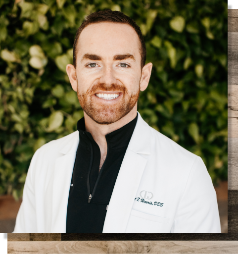
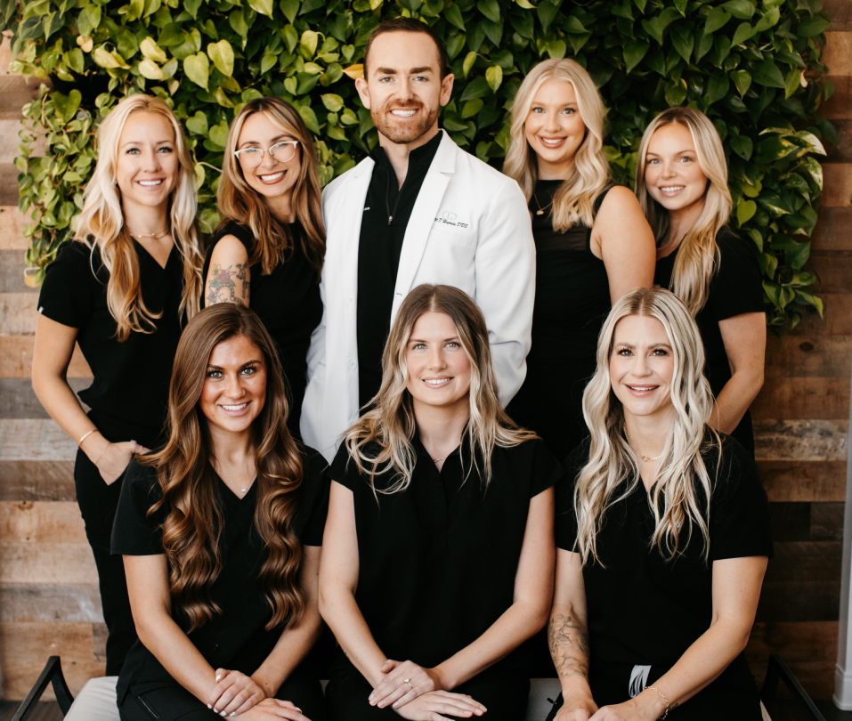

Two dentists, one belief: the smile is the window to the soul, and everyone deserves to love theirs.

An Arkansas native whose compassion and training make him the heart of the practice. Dr. Harris combines a lifelong enthusiasm for dentistry with a genuine passion for continued learning, constantly studying the latest innovations so his patients get the best modern dentistry can offer.
He is especially passionate about cosmetic dentistry, helping patients find confidence and a remarkable appearance through porcelain veneers and smile design. His approach is simple: treat every patient with the same gentle, thorough care he would give a member of his own family.
With fifteen years of experience transforming smiles, even in the most complex cases, Dr. Newman founded Gulch Dental Studio in 2015 on a conviction: a dental visit should feel like hospitality, not a chore. The studio's luxurious amenities and serene design are his answer to dental anxiety.
He is also the founder of an established practice in Green Hills, and brings deep roots across Tennessee to everything the studio does.
From the front desk to the hygienist's chair, everyone here is chosen for the same thing: making you feel at ease.

Dr. Harris wrote about what those two words mean here. Premium care should never mean premium prices.
Gulch Dental Studio opens its doors in Nashville's Gulch district, built around hospitality and comfort.
A full-service studio offering cosmetic, restorative, and general dentistry, with every level of sedation available for anxious patients.
Rates comparable to less modernized practices. Insurance accepted, CareCredit financing available. Quality care should never depend on budget.